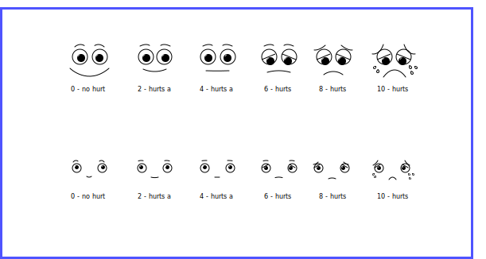
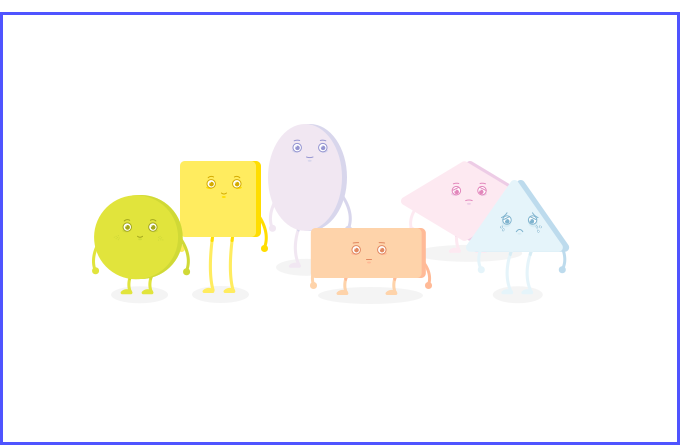

HealthTech
From Ideas
to Prototypes
The team initially generated over 50 design concepts for our interventions. These concepts ranged from interactive ads to mini-games. Each concept was evaluated on several metrics.
Potential Learning Outcomes
What could a participant learn?
Novelty
Is this design novel and exciting?
Generalizability
Can we swap learning content?
Complexity
How difficult is it to understand?
The team leaned on each other’s expertise after completing the generative research phase to hand select 20 prototypes to develop further.


Creating a
Character Style
When creating our character style for our prototypes, we considered several different styles from realistic to playful. We explored color, shape, and size, as well as their ability to properly represent an injury. After testing our characters with participants, we landed on a playful cartoon style which allowed us to showcase injuries properly, while still distancing characters from looking too human, which would have elicited too much empathy from participants. We also used the wong-baker scale to create medically accurate facial expressions for our characters.


Validating our Prototypes
During our initial rounds of paper prototype testing, we aimed to determine if our general concepts would actually work.
Evaluate Game Mechanics
Find ways to deepen our game mechanics so they keep players engaged.
Overall Game Feel
Determine if participants enjoyed the basic interactions in the game, and whether it enticed them to play more.
Could the player decipher a learning outcome?
Did our initial prototypes show promising results that high fidelity versions could teach our participants?
Testing Interactive Prototypes
We used 3 key metrics to determine if our high fidelity prototypes were successful.

LEARN
To determine our prototypes were successful at teaching key knowledge and skill components, we administered pre, post, and follow-up tests. We aimed to get a base understanding on whether or not short term learning gain could occur after completing our modules.
After interacting with our prototypes, 45% of participants believed they could save more money than they previously thought, by going to an urgent care instead of an emergency room.
After interacting with our prototypes, 45% of participants believed they could save more money than they previously thought, by going to an urgent care instead of an emergency room.

ENJOY
A key component of our prototypes were that they obfuscated their true intentions as educational tools. We wanted to make sure that our prototypes were generally enjoyable and that participants considered them genuinely interesting.
While testing, several participants mentioned that they would “hit replay” every time, showing us that our games had genuine interest and replayability for our core audiences.
While testing, several participants mentioned that they would “hit replay” every time, showing us that our games had genuine interest and replayability for our core audiences.

INTERACT
Lastly, we wanted to validate that our participants would interact with our modules in context without being prompted to do so. We set up several sessions where participants were presented with a simulated web page and asked to complete a general task on the site. We then watched to see if they would click and play through our modules.
When testing our final iteration of the Flu Monster, 5/5 participants interacted with our seasonal wellness prompt, on their own.
When testing our final iteration of the Flu Monster, 5/5 participants interacted with our seasonal wellness prompt, on their own.